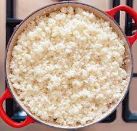

Umqhokoqo

Description
This is maize meal that is cooked with water untiil it resemble a crumbly pap, served best with milk and sour milk
Ingredients
- 1 tsp. salt
- 400g maize meal
- 1 litre full-cream amasi
Steps
- Bring 4 cups water to the boil and add the salt. Using a fork, stir the maize meal into the water to create lumps. Stir through to get a dry, crumbly consistency.
- Once the water has “evaporated”, reduce the heat and cook for 25 minutes, covered. Once the umphokoqo is ready, fluff with a fork and turn out into a container to cool. Serve at room temperature with cold amasi poured over the top.